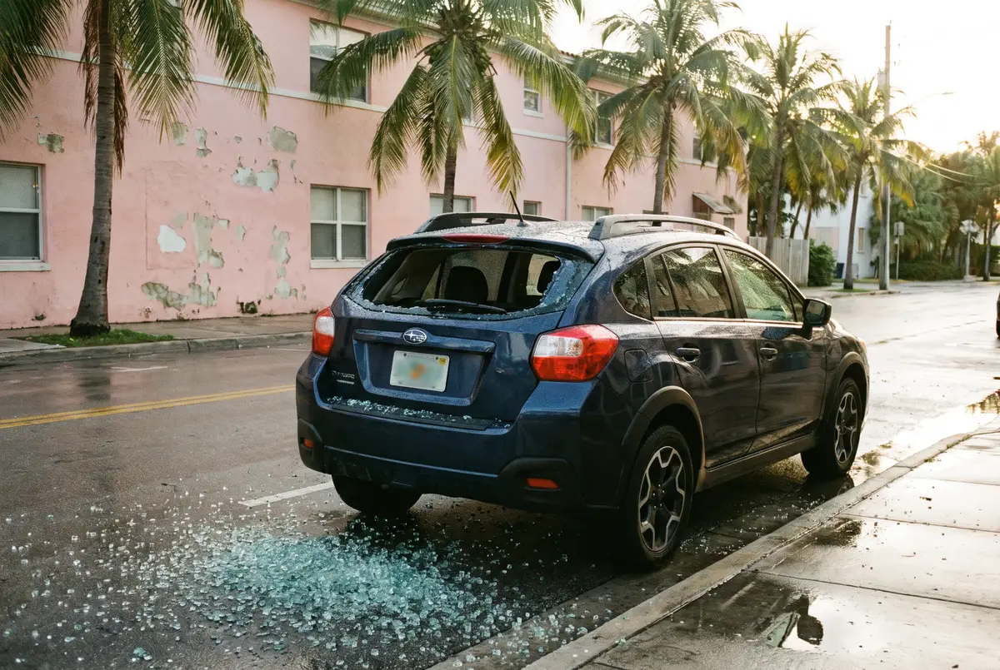

Rear windshield replacement in Miami puts new back glass on your sedan, SUV, hatchback or pickup. Miami Auto Glass Repair comes to your home, building garage or work, clears out the broken glass and installs a new rear windshield with the defroster, antenna and rear wiper hooked back up.

Back glass is tempered, so when it breaks it falls into the trunk, the cargo area and the back seat. The technician vacuums all of it out first, then removes the trim and cuts away what is left of the old adhesive. The new rear windshield is set in fresh urethane, the defroster and antenna connectors are plugged back in, and on hatchbacks and SUVs the rear wiper is refitted. Pickup sliding back windows are a separate part with their own track and latch. Before we arrive, pull anything you care about out of the cargo area.
Rear glass breaks from impacts, slammed hatches and thrown objects.
Coconuts, palm fronds and branches land on back glass in summer storms and hurricanes.
A bump from behind can break the back glass even with little body damage.
A damaged grid or connector can mean the glass needs replacing.
Sliding back windows crack and their latches fail over time.
A covered rear window blocks your mirror view and leaks in the rain.
A rear windshield is tempered glass, like the side windows, and not the laminated glass used in the front. Tempered glass is heat-treated so that any break releases all the stress in the pane at once, and it crumbles into small cubes. Heat makes it touchier. Back glass on a dark car parked in the Miami sun gets very hot, and a slammed hatch or a sudden cold rain adds a shock it cannot absorb. People ask, “Why did it break when nothing hit it?” A tiny edge chip from years ago can be enough. It is an annoying answer, but it is the honest one.
The cost of rear windshield replacement in Miami depends on the vehicle and what is built into the glass. Defroster grids, built-in antennas, rear wiper holes, privacy tint and third brake lights all change the part. Pickup sliders and power rear windows on some trucks are their own category. Back glass is not covered by Florida’s windshield deductible waiver, so a claim usually goes through the deductible on your comprehensive coverage. Call with your year, make and model for a free quote.
| Front windshield | Rear windshield | |
|---|---|---|
| Glass type | Laminated, two layers with plastic between | Tempered, one layer that crumbles |
| Can a chip be repaired? | Often, if it is small | No, a break means new glass |
| Florida deductible | Waived with comprehensive coverage | Your normal deductible applies |
| What gets reconnected | Mirror, sensors and camera | Defroster, antenna and rear wiper |
Side windows broken in the same incident are covered on our car window replacement in Miami page, and we can do both on one visit.
No. Rear windshields are tempered glass, so once they crack or break they cannot be filled with resin like a front windshield chip. The whole pane has to be replaced.
Yes. New rear glass comes with its own defroster grid, and the technician reconnects the power leads and checks that the grid heats before leaving.
Most rear windshields take about an hour, plus time to vacuum out the broken glass. The adhesive needs a short cure before you drive.
Yes. Manual and power sliding back windows on pickups are ordered for your exact truck and installed with the track and latch.
Call for a free rear windshield replacement quote in Miami. We clean up the glass and reconnect the defroster.
Call (786) 917-3712 Now